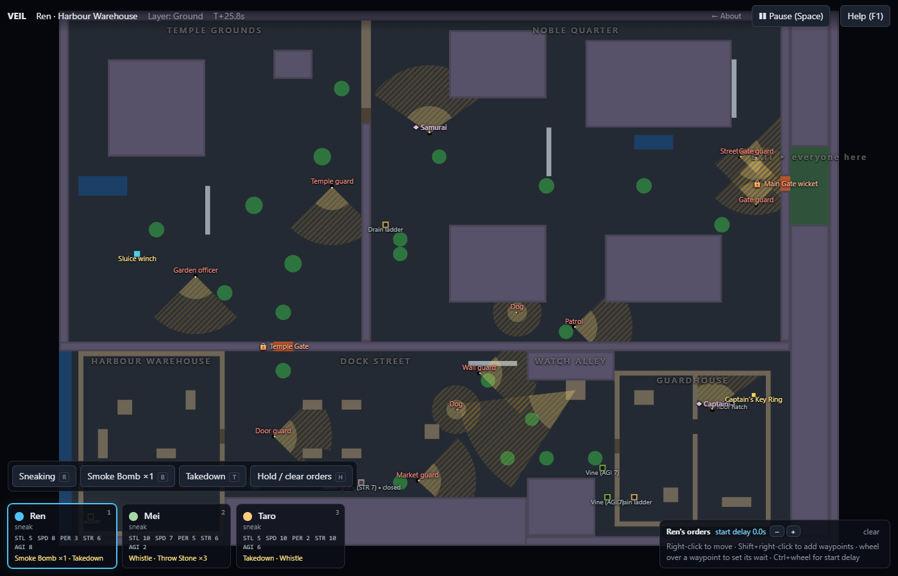

Many answers, one question.
The Veil botched a job. The town is locked down. Get everyone out through the Main Gate. The map is a chain of locations, each one a small puzzle: a guard setup stands between you and a new route. Explore until you are stuck, find the blocker, read the cones, solve it with the characters you brought, and unlock a piece of the map you will probably have to walk back through.
Every blocker has at least two solutions. The squad you pick decides which ones exist.
Everything that can see you is shown.
Solid cone: never. Dashed cone: only while you move. A sneaking character standing still in the far zone is invisible, which lets you park someone inside a guard's view to wait for a timing window. There are no hidden rolls. If you got spotted you can point at the cone that did it.
Pause, queue waypoints with waits, give one character a delayed start, unpause, watch the synchronised double takedown happen. Quicksave is free and instant: failure is cheap, knowledge is kept.

Seven locations, two forced backtracks, nothing re-entered unchanged.


Every cone is drawn. No hidden rolls.
Every blocker has two or more solutions. The squad decides which.
Pause, queue, delay, synchronise.
Instant quicksave. The fog of war remembers.
Metres and seconds. Rendering never leaks into the simulation.
Badges and a Blind preset for people who finished it.
Metres and seconds. The picture is only a view of the state.
Reveal mode (F2) with the fog off: fifteen enemies, every cone drawn, three layers under one camera. Solid wedge near the guard, striped wedge beyond it. The simulation is plain data, so a quicksave is a copy and a quickload is a swap.
Dev flags for studying the map: play.html?auto=3&sim=20&reveal skips the squad select, fast-forwards 20 s and reveals everything. &layer=-1 views the sewers, &cx=80&cz=55&ppm=8 places the camera.

| Left click / 1–4 | Select a character. Left click an enemy, door, item, lever or ladder for the context action. |
| Right click | Move here. Shift appends a waypoint. |
| Wheel over a waypoint | Adjust the wait at that waypoint (±0.5 s). Ctrl + wheel sets the start delay of the selected character. |
| T S B W L | Arm Takedown, Throw Stone, Smoke Bomb, Whistle, Lockpick, then click the target. |
| C · R · H/X | Drop a carried body (in a bush to hide it, beside water to sink it); click a body to carry it · toggle sneak/run · hold (clear orders). |
| Space · Tab · F | Pause · cycle the viewed layer (sewer / ground / roofs) · centre on the selection. |
| F5 · F9 | Quicksave · quickload. Instant. |
| Wheel · middle drag · arrow keys | Zoom · pan · pan. |
| F2 | Reveal mode: no fog, every enemy and cone shown. A design view for studying the map, not for playing. |